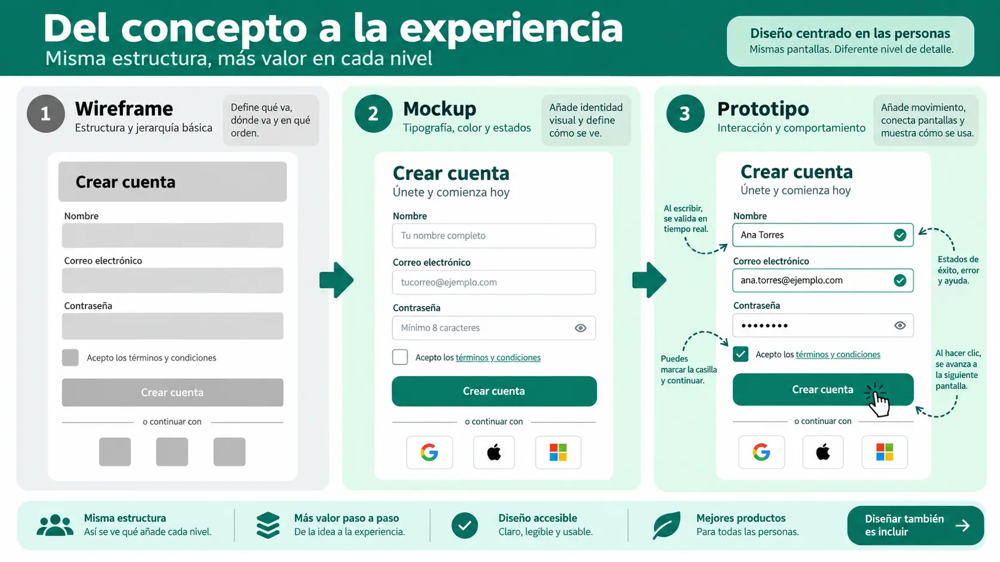

Contenido de la página
Objetivo docente
Separar decisiones de estructura de las decisiones visuales y utilizar Stitch para explorar alternativas sin aceptar la salida sin revisión.
Contenido para explicar
El wireframe representa jerarquía, agrupación y recorrido con bajo detalle. El mockup añade tipografía, color, iconos, estados y apariencia. Un prototipo añade comportamiento o navegación. Saltar directamente al acabado visual dificulta detectar problemas estructurales.

Ejemplo básico resuelto
Prompt para wireframe:
Diseña un wireframe de baja fidelidad para añadir y consultar tareas. Prioriza una acción principal, filtros secundarios y lectura móvil. Usa cajas y etiquetas, sin colores decorativos. Explica el orden de lectura.
Revisión: se rechaza una variante que sitúa «Eliminar todas» junto a «Añadir» con igual peso. En el mockup se aplican roles M3 y se mantiene la jerarquía validada.
RA4-PB03 · Dos niveles de representación
Enunciado para publicar
Genera dos wireframes en Stitch, elige uno mediante tres criterios y conviértelo en mockup M3. Marca cinco diferencias entre ambos niveles.
Solución orientativa
Mostrar ejemplo de solución
Elección basada en: tarea principal visible, orden lógico y adaptación estrecha. Diferencias esperables: roles de color, escala tipográfica, iconografía, elevación/contenedores y estados. Ninguna diferencia debe alterar sin justificar la estructura aprobada.
Evidencia
Prompt, dos propuestas, tabla de decisión, wireframe elegido, mockup y explicación. Se evalúa el razonamiento, no la belleza aislada.